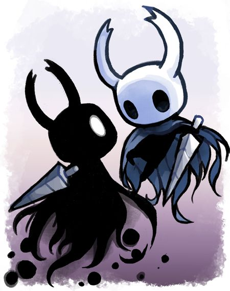

INDIE
Los videojuegos independientes no tienen un tema exacto del que tratar, sino que, al ser desarroladoras independientes, apuntan más hacia la innovación, creatividad y experimentación artística.

Hollow knigh